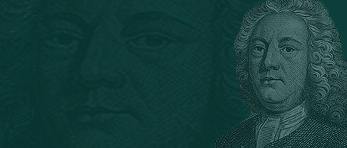

A Brief History of Type
Part 1 - The Pioneers of European Type Design
Nicolas Jenson
Nicholas Jenson (c.1420 – 1480) was a French engraver, pioneer, printer and type designer who carried out most of his work in Venice, Italy.
Jenson acted as Master of the French Royal Mint at Tours, and is credited with being the creator of one of the finest early Roman type faces. Nicholas Jenson has been something of an iconic figure among students of early printing since the nineteenth century when the aesthete William Morris praised the beauty and perfection of his roman font. Jenson is an important figure in the early history of printing and a pivotal force in the emergence of Venice as one of the first great centers of the printing press.
Claude Garamont
Claude Garamont (c. 1510–1561), known commonly as Claude Garamond, was a French type designer, publisher and punch-cutter based in Paris Garamond worked as an engraver of punches, the masters used to stamp matrices, the moulds used to cast metal type.
He worked in the tradition now called old-style serif design, which produced letters with a relatively organic structure resembling handwriting with a pen but with a slightly more structured and upright design. Considered one of the leading type designers of all time, he is recognised to this day for the elegance of his typefaces. Many old-style serif typefaces are collectively known as Garamond, named after the designer.
Garamond was one of the first independent punchcutters, specialising in type design and punch-cutting as a service to others rather than working in house for a specific printer His career therefore helped to define the future of commercial printing with typefounding as a distinct industry to printing books.
William Caslon
William Caslon I (1692 – 1766), also known as William Caslon the Elder, was an English gunsmith and designer of typefaces. The distinction and legibility of his type secured him the patronage of the leading printers of the day in England and the continent. His typefaces transformed English type design and first established an English national typographic style.
Caslon was born in Cradley, Worcestershire in 1692 and trained as an engraver in nearby Birmingham. In 1716, he started business in London as an engraver of gun locks and barrels and as a bookbinder's tool cutter. Having contact with printers, he was induced to fit up a type foundry, largely through the encouragement of William Bowyer.
“’Legibility’ is based on the ease with which one letter can be told from the other. ‘Readability’ is the ease with which the eye can absorb the message and move along the line.” —Types of Typefaces (1967)
John Baskerville
John Baskerville (1706 – 1775) was an English businessman whose entrepreneurial attentions included japanning and papier-mâché; he is, however, best remembered as a typographer and printer, not least for the design of the eponymous typeface which, to this very day, bears his name.
Baskerville was born in the village of Wolverley, near Kidderminster in Worcestershire, and worked as a printer in Birmingham. Baskerville printed works for the University of Cambridge and, although an atheist, printed a splendid folio bible in 1763. His typefaces were greatly admired by Benjamin Franklin, a printer and fellow member of the Royal Society of Arts, who took the designs back to the newly created United States, where they were adopted for most federal government publishing.
Giambattista Bodoni
Giambattista Bodoni (1740 – 1813) was an Italian typographer, type designer, compositor, printer and publisher in Parma. He first took the type designs of Pierre Simon Fournier as his exemplars, but afterwards became an admirer of the more modelled types of John Baskerville; and he and Firmin Didot evolved a style of type called 'New Face', in which the letters are cut in such a way as to produce a strong contrast between the thick and thin parts of their body.
Bodoni designed many typefaces, each one in a large range of sizes. He is even more admired as a compositor, as the large range of sizes which he cut enabled him to compose his pages with the greatest possible subtlety of spacing. Like Baskerville, he set off his texts with wide margins and used little or no decoration.